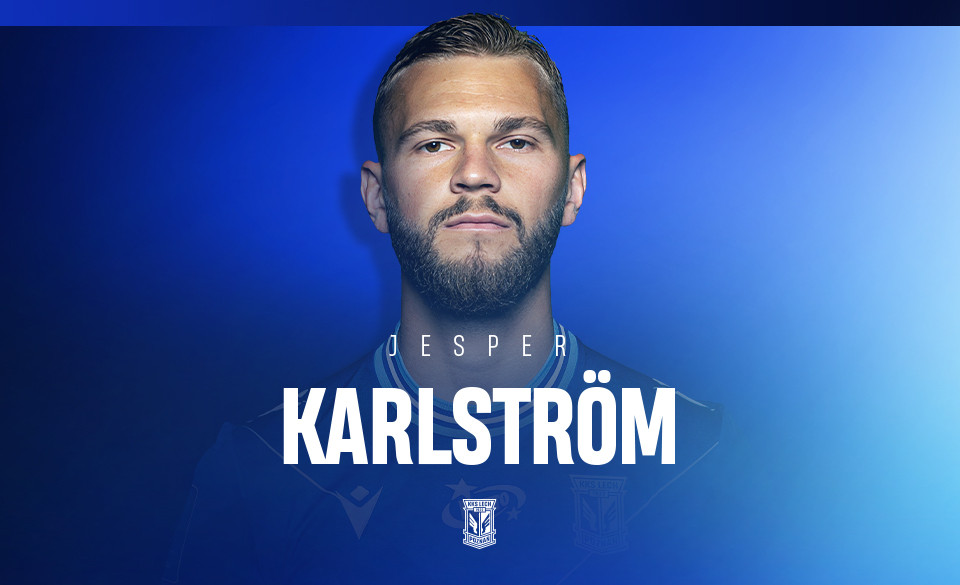

Bartosz Mrozek
Bartosz Mrozek (ur. 23 lutego 2000 w Katowicach) – polski piłkarz, występujący na pozycji bramkarza.
Jesper Karlström

Jesper Kewe Karlström (ur. 21 czerwca 1995 w Sztokholmie) – szwedzki piłkarz, występujący na pozycji pomocnika w Lechu Poznań i reprezentacji Szwecji.
Bartosz Salomon
Bartosz Salamon (ur. 1 maja 1991 w Poznaniu) – polski piłkarz występujący na pozycji obrońcy w polskim klubie Lech Poznań, reprezentant Polski.
Joel Pereira
Joel Vieira Pereira (ur. 28 września 1996 w Vila Nova de Gaia) – portugalski piłkarz występujący na pozycji obrońcy w polskim klubie Lech Poznań.
Radosław Murawski
Radosław Paweł Murawski (ur. 22 kwietnia 1994 w Gliwicach) – polski piłkarz występujący na pozycji pomocnika w polskim klubie Lech Poznań.
Antonio Milic
Antonio Milić (ur. 10 marca 1994 w Splicie) – chorwacki piłkarz występujący na pozycji obrońcy w Lechu Poznań. Antonio Milić..
Elias Andersson
Nils Erik Elias Andersson (ur. 31 stycznia 1996 w Hässleholm) – szwedzki piłkarz występujący na pozycji obrońcy w Lechu Poznań oraz w reprezentacji Szwecji.
Adriel Ba Loua

Adriel D'Avila Ba Loua (ur. 25 lipca 1996 w Abidżanie) – iworyjski piłkarz występujący na pozycji pomocnika w Lechu Poznań.
Filip Marchwinski
Filip Marchwiński (ur. 10 stycznia 2002 w Poznaniu) – polski piłkarz, występujący na pozycji pomocnika w polskim klubie Lech Poznań.
Kristoffer Velde
Kristoffer Velde (ur. 9 września 1999 w Haugesund) – norweski piłkarz występujący na pozycji pomocnika w Lechu Poznań.
Mikael Ishak

Mikael Ishak (ur. 31 marca 1993 w Södertälje) – szwedzki piłkarz asyryjskiego pochodzenia występujący na pozycji napastnika w Lechu Poznań.